AgriXport India brings together policymakers, industry leaders, exporters, technology providers, financial institutions, certification and quality assurance bodies, and international buyers to shape the future of India's agricultural exports.
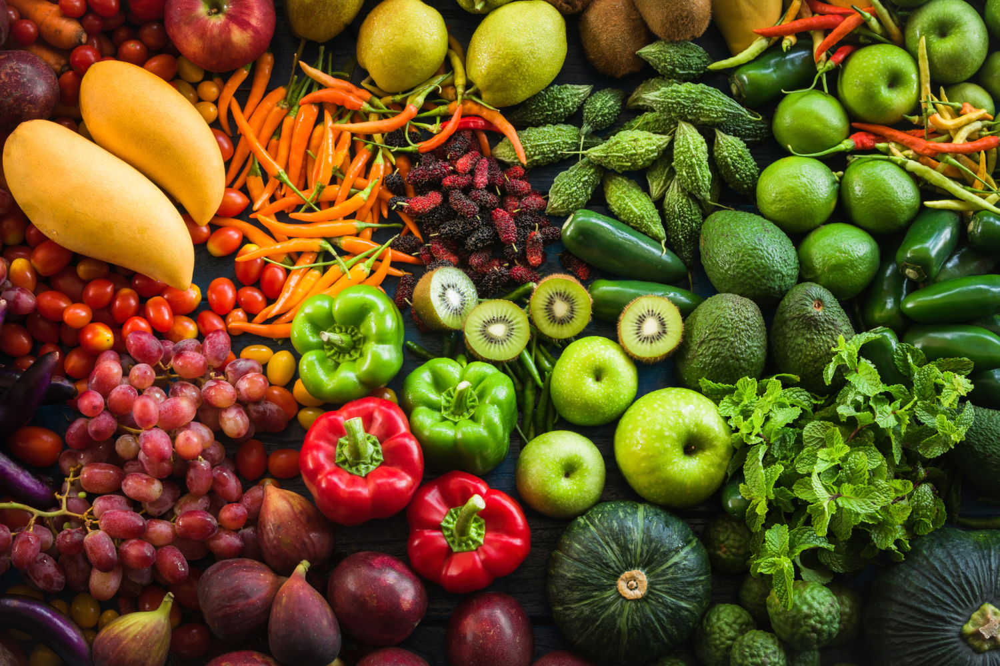
Key areas of discussion driving India's agricultural exports and global market competitiveness.
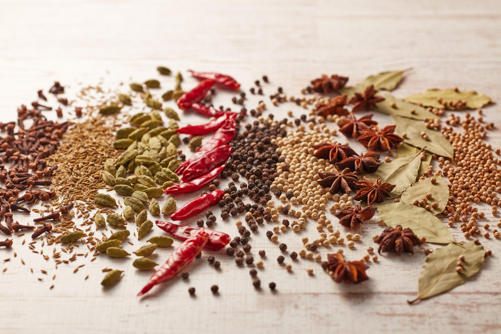
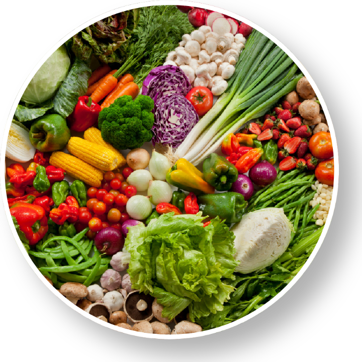
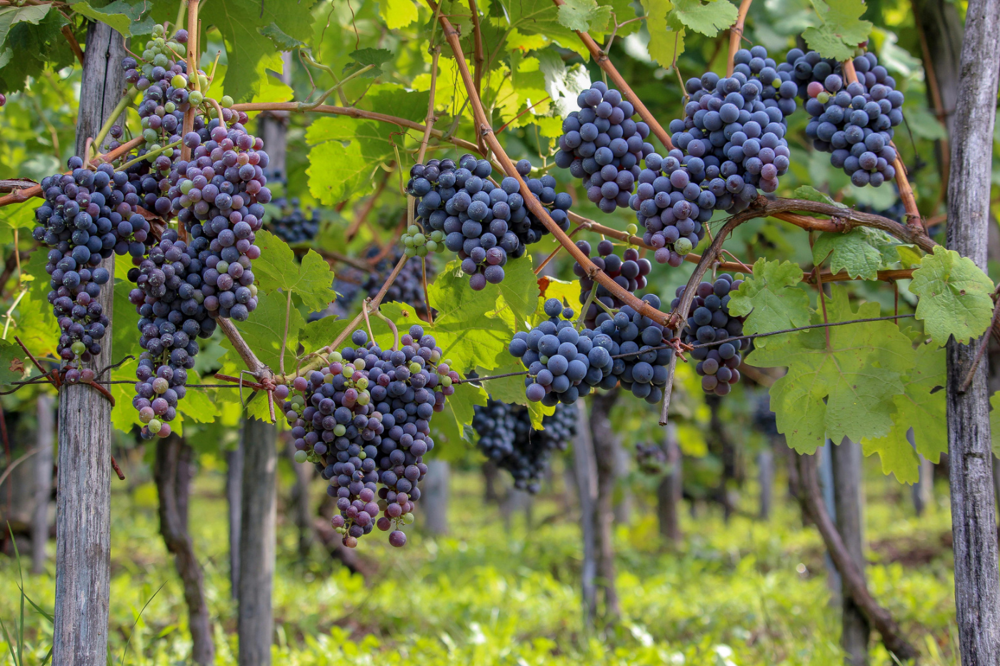
India is well positioned to capitalize on emerging global opportunities, but sustaining export growth requires stronger quality systems, greater transparency, improved market access and ecosystem-wide collaboration.
A focussed and engaging programme designed to explore opportunities, share insights and shape the future of India's agricultural exports.
India's export vision, emerging opportunities and the strategic interventions needed to strengthen India's position in global agricultural markets.
Names are published here as each speaker confirms. Sponsor keynotes and panel moderators appear alongside the invited programme.
Gain insights into emerging global export opportunities and buyer expectations
Connect with policymakers, exporters, buyers and industry experts
Discover technologies driving quality, traceability and export readiness
Learn practical approaches to farmer-level capability building
Connect with key stakeholders across the agricultural export ecosystem
Contribute to India's roadmap for becoming a globally trusted supplier
Inaugural ceremony, technical sessions, panel discussions and delegates from our last edition.
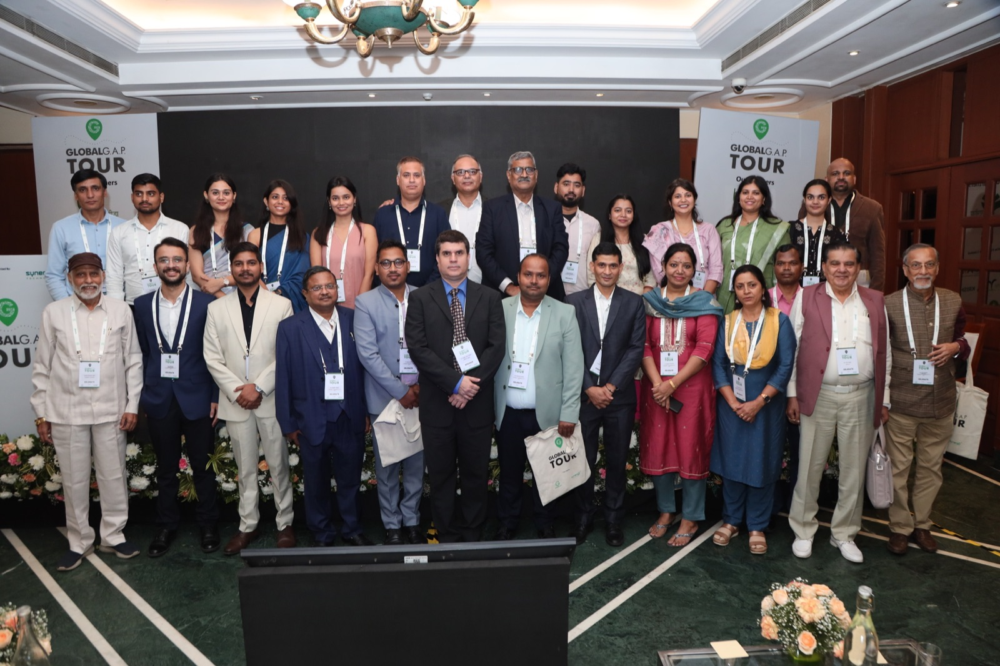
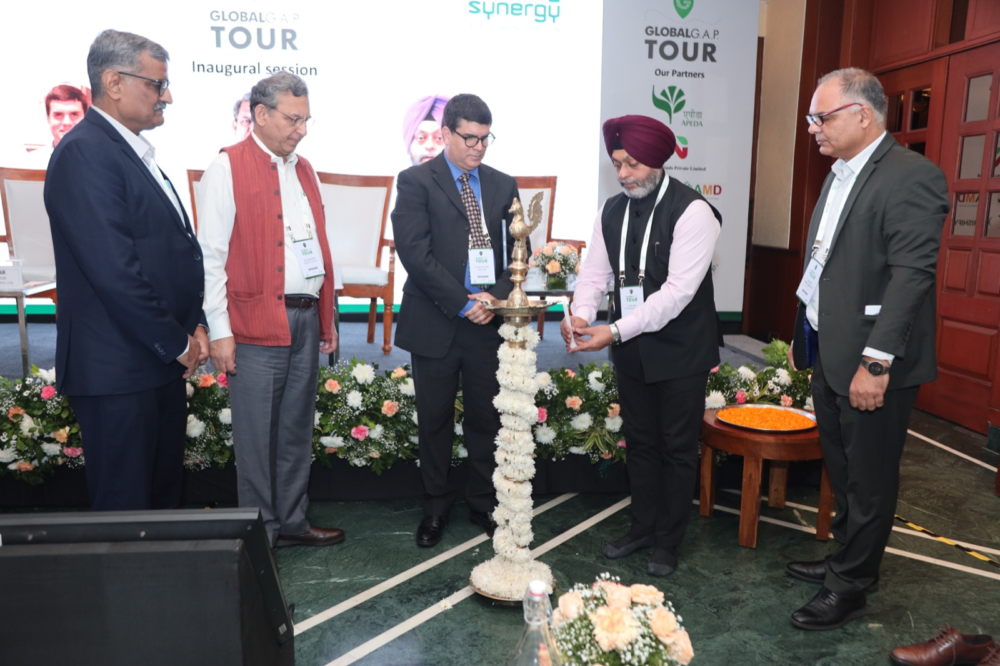
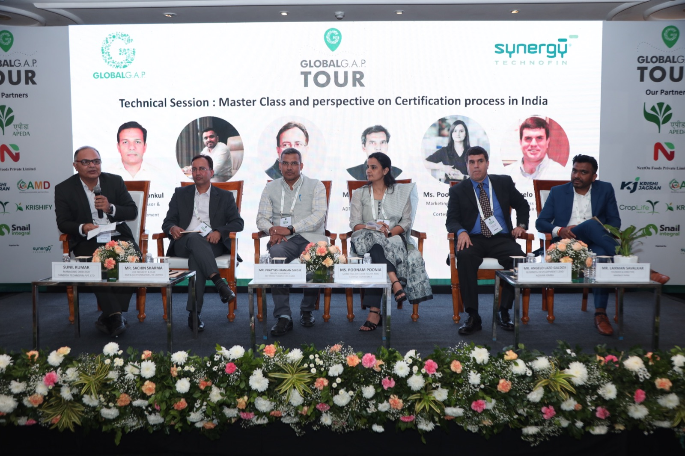
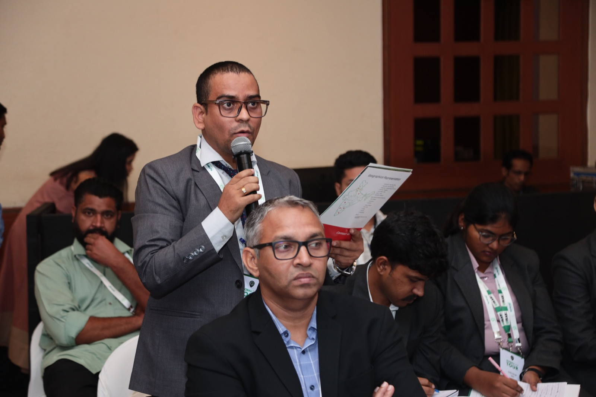
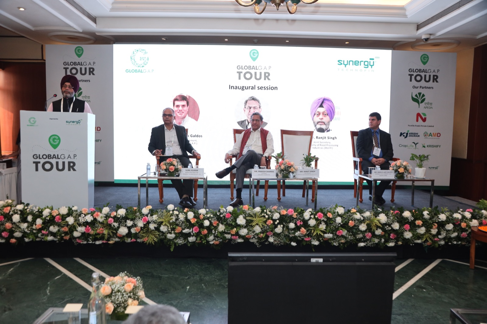
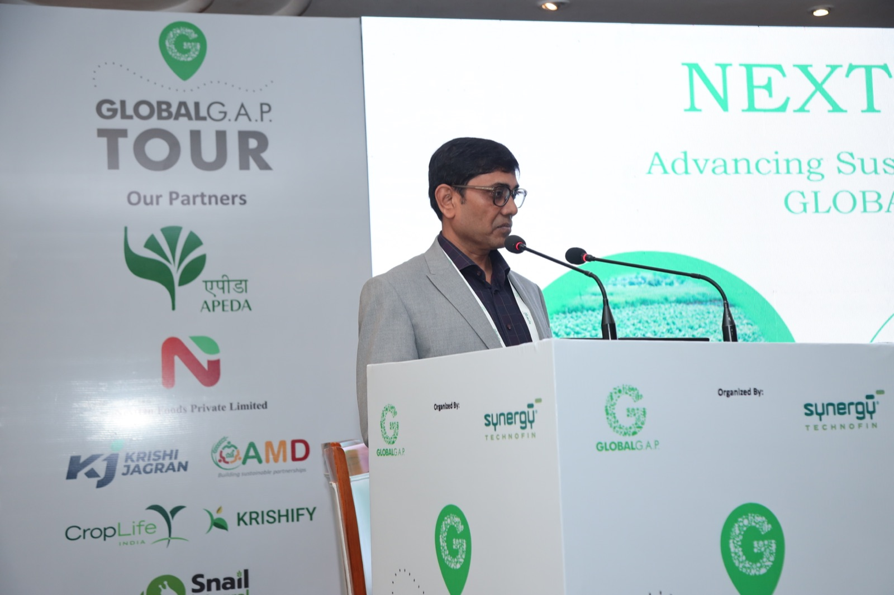
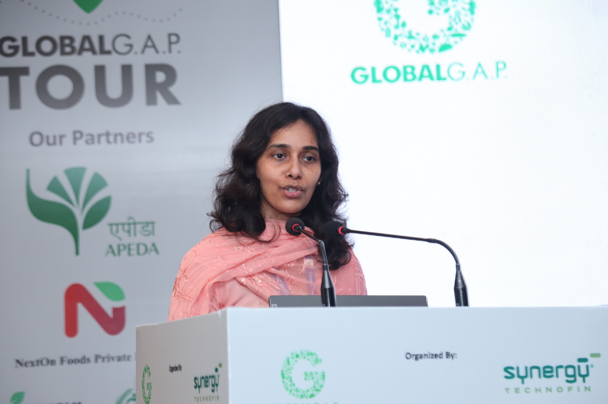
Four tiers, each carrying stage presence, souvenir placement, branding across collaterals and complimentary delegate passes.
Partner logos are added here as agreements are confirmed. Select an open position to enquire.
Synergy Technofin is a leading agribusiness consulting firm in India, offering end-to-end advisory and implementation solutions. With 16+ years of experience, we specialize in agri value chain analysis, market mapping, farmer engagement, business assessment, and India entry strategies, with over 250 completed advisory assignments and overseas representation. Our transformational approach drives innovation, growth, and business effectiveness across all aspects of agribusiness.
QuantumLeap is a universal audit and assessment platform built specifically to digitise compliance processes. It has been in continuous development for over 20 years. Its core design principle is that any regulation, standard or best-practice framework can be loaded into it as an assessment scheme, without rebuilding the platform.
+91-11-41669393
info@synergytechnofin.com
www.synergytechnofin.com
Map My Crop is a satellite AI-driven agriculture technology company helping organizations improve crop monitoring, traceability, sustainability and decision-making through advanced geospatial intelligence and data analytics.
Delegate registration opens ahead of the 26–27 February 2027 programme. Sponsors receive complimentary passes with every tier.